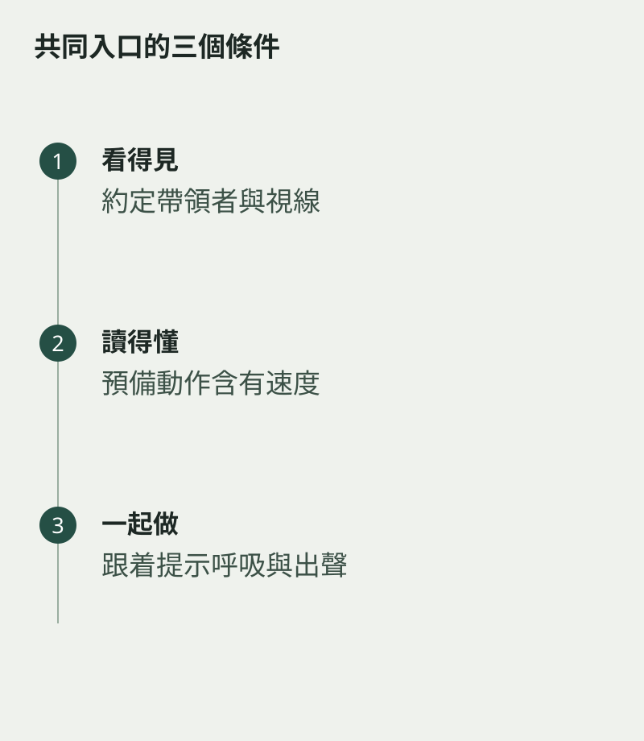

合奏的第一拍常在聲音出現之前已經決定。清楚的預備動作能交代速度、起點與語氣；對吹管樂器來說，呼吸也可以成為共同提示。動作不必大，卻要讓伙伴讀得懂。
開始前約定誰帶領，並確認大家看得見提示。若有人低頭翻頁、有人已經吸氣，第一拍便容易各自出發，之後才忙着追上。
提示需要有時間感
帶領者先在心裏感覺速度，再給有方向的預備動作。其他人聽着預備動作，一起進入拍子；若等到看見「開始」才反應，便會遲一步。先只做動作與一個音，確認大家同時到達。
換不同人帶領，能發現動作是否太含糊、太突然，或每次速度不一致。排練時說清楚感受，比默默猜測更有效。

不只開頭需要提示
長休止後的入口、漸慢後的新段落，以及全曲結尾，也可能需要視線或動作協調。先在譜上約定位置，再實際試一次，避免演出時臨時尋找對方。
好的提示不會喧賓奪主，它只是讓幾個人同時知道下一步。當呼吸、視線與動作有了共識，第一個音便像一句共同說出的話，沒有誰需要搶先，也沒有誰被留在後面。